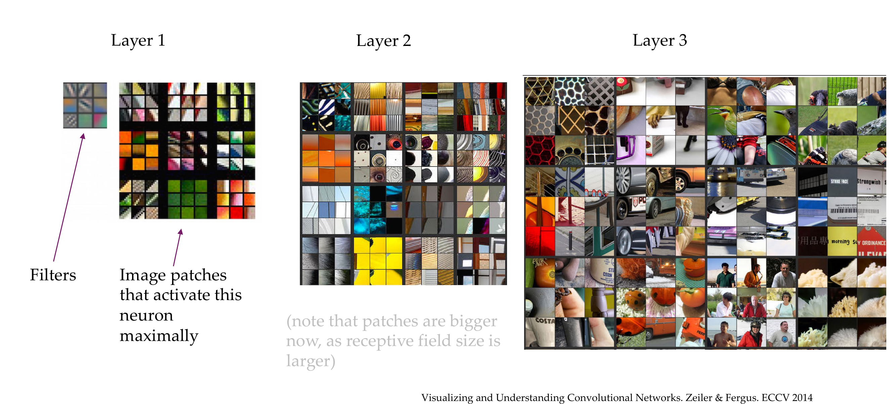
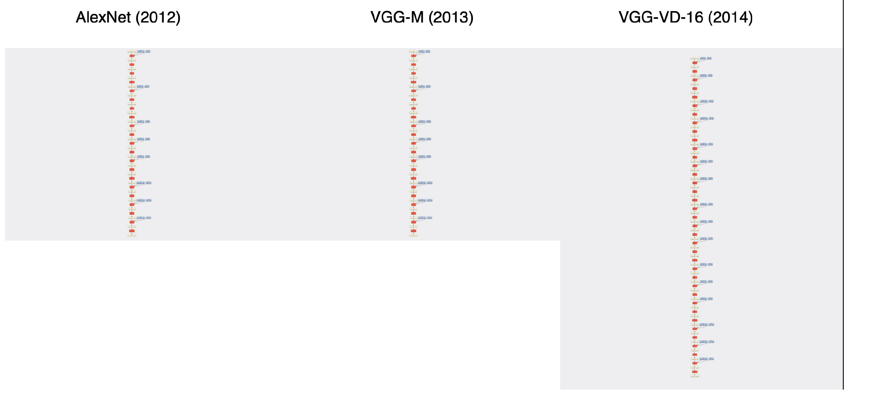
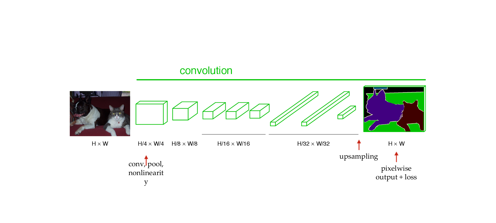

1 Title
2 Lecture overview

3 Understanding deep embeddings
4 The deep layers will gradually learn more abstract features.

5 This deep, lower dimensional space learns meaningful structures
6 What do the different layers in a deep neural netwok learn

7 What do the different layers in a deep neural network learn
8 How do these layers correspond to “semantics”: numerical evaluation
9 . Let’s wake up: Summarize the last few minutes to your neighbor. |
10 1x1 Convolution: a computationally cheap method
Last time a
11 1x1 Convolution: a computationally cheap method
O d a e o Eg 28x28x192 -> 24x24x32 | 5X5 e —10008V, eee —l | |
12 ConvNet Configuration
AIRN] B [| C | D 7 —£ |
11 weight | 11 weight | 13 weight | 16 weight 16 weight | 19 weight
Tacenern lace Tan<ce nee Tacenee Tacs Ta<ceneern13 VGGI16

14 Characteristics
15 Why 3x3 filters?

16 Why 3x3 filters?

17 Why 3x3 filters?

18 Why 3x3 filters?

19 Even smaller filters?

20 Overall shapes and sizes when inputting a 224x224 image:

21 Training
22 Feature maps

23 Filters
24 Class Outputs

25 Title

26 Basic idea
27 Basic idea
28 Inception module
29 Inception module

30 Architecture
31 Architecture: the “Inception” module

32 Architecture: the auxiliary classifier idea

33 Why aux classifiers? Vanishing gradients
34 Architecture

35 Inceptions v2, v3, V4, ….

36 Title

37 AlexNet (2012)
38 Evolution

39 Title
40 Evolution

41 Evolution
42 Why care about architectures… here’s why:

43 Some facts about ResNets

44 Hypothesis

45 Hypothesis

46 Hypothesis

47 However, when trained the deeper network has higher training error
48 Testing the hypothesis

49 Observation
50 The “residual idea”, intuitively

51 The residual block
52 No degradation anymore

53 ResNet breaks records
54 _ResNet variants & ResNeXt | ResNext

55 Some observations

56 . Quiz: On the right you see the ;

57 HighwayNet (slightly earlier than ResNets in 2015)

58 DenseNet
59 DenseNet

60 DenseNet

61 DenseNets

62 Trend has not stopped with DenseNet

63 MobileNets: Depthwise convolutions for high latency
64 BagNet: Solving ImageNet with tiny 9x9 sized puzzle pieces?
65 ImageNet: mostly textures?
66 How research gets done part 5
Isamu Akasaki: “As Thomas Edison said, ‘Genius is one percent inspiration and 99 perspiration.’ | say this to younger
67 a. = _

68 Region-based Convolutional Neural Network (R-CNN)
69 R-CNN

70 Improving the Bounding Boxes
71 To summarize
72 R-CNN is really quite slow for a few simple reasons:

73 Some results

74 Fast R-CNN
75 Fast R-CNN Insight 1: Region of Interest Pooling (ROIPool)
76 Region of Interest Pooling (ROIPool)
77 Region of Interest Pooling (ROIPool)

78 Region of Interest Pooling (ROIPool)

79 Region of Interest Pooling (ROIPool)

80 Fast R-CNN Insight 2: Combine All Models into One Network

81 Fast R-CNN: Joint training framework
82 Fast R-CNN: Steps
83 Fast R-CNN: Steps
84 Fast R-CNN: Steps

85 Fast R-CNN: Steps

86 Fast R-CNN: Steps
87 Smart training
88 Some results
89 Fast-RCNN

90 Faster R-CNN - Speeding Up Region Proposal

91 Faster R-CNN

92 Faster R-CNN
93 Faster R-CNN [Girshick2016]
94 Mask R-CNN
95 Mask R-CNN

96 Mask R-CNN

97 RoIAlign - Realigning RoIPool to be More Accurate
98 RoIAlign - Realigning RoIPool to be More Accurate

99 99
person OO lumbrella.97
roa 97 person.66 ia person 7” umbreta.26umbroia. 99 TF skateboard: ’ ) aoe
utnbrella1.00.
—-_ , ee Te gt

100 Becoming fully convolutional
101 Upsampling the output
102 “Deconvolution”
103 End-to-end, pixels-to-pixels network

104 End-to-end, pixels-to-pixels network

105 References